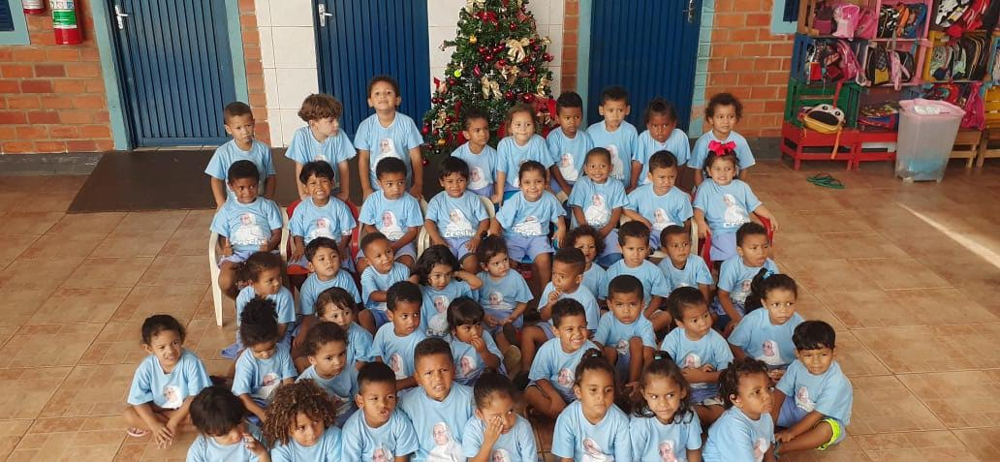

A Creche
O Instituto de Promoção Humana Papa João XXII, fundado em 24 de junho de 1970, é uma entidade não governamental que desenvolve ações sociais para melhorar a qualidade de vida da criança, do adolescente e da família. Prestamos sinceras homenagens ao Papa João XXIII, pois ele foi um sacerdote de caráter pacificador, sempre voltado para as questões da igreja, além de valorizar o ser humano através da promoção humana, o que o levou a ser o patrono de nossa instituição. Desta forma, nosso instituto, criado há mais de 50 anos pela associação das ex-alunas das Filhas de Maria Auxiliadora (Ex-alunas) do Colégio Coração de Jesus de Cuiabá-MT.
A Creche Comunitária Irmã Hilda Aydil Bodstein foi estabelecida para dar continuidade aos trabalhos de nosso instituto. A irmã Hilda, como delegada das ex-alunas, juntamente com a inspetoria, adorava organizar passeios e excursões, direcionando todos os voluntários para atividades beneficentes, visando atender as famílias menos favorecidas.
Inicialmente, a creche operava em um espaço cedido pela Comunidade Católica Bom Jesus, em 1999. No entanto, em 24 de maio de 2003, foi inaugurado um espaço próprio, situado na Rua Antonio Alves Martins, no bairro Novo Paraíso 2, atrás da igreja onde anteriormente funcionava.
A preocupação da creche se estende diretamente às mães, pois muitas dessas crianças que frequentam nossa instituição contam apenas com elas que precisam buscar o sustento para suas famílias. Em conformidade com o estabelecido na Lei de Diretrizes e Bases, a creche visa dar continuidade à tarefa de cuidar de crianças que necessitam de amparo.
Desde sua fundação até os dias atuais, nossa instituição tem buscado cumprir seu papel, sempre preocupada com a integração e inclusão social. Realizamos ações que contribuem para o exercício da cidadania e a geração de paz, prestando serviços nas áreas de assistência social, educação, cultura, esporte e lazer.